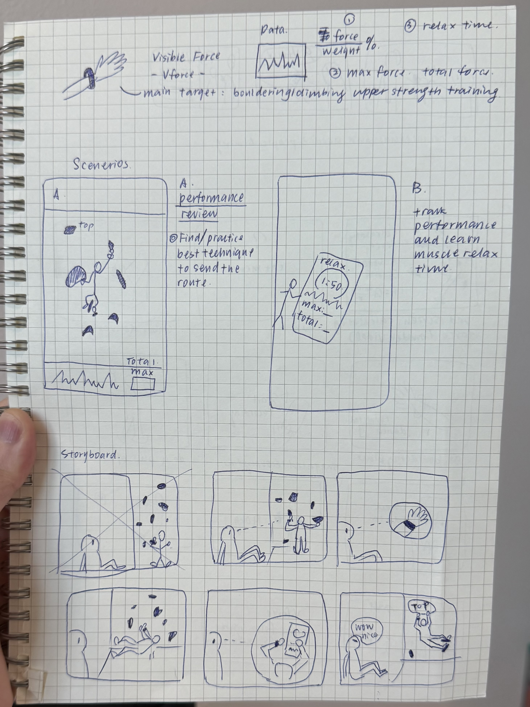
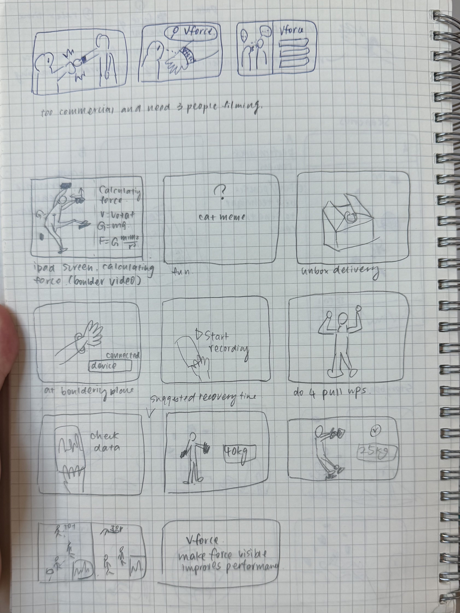
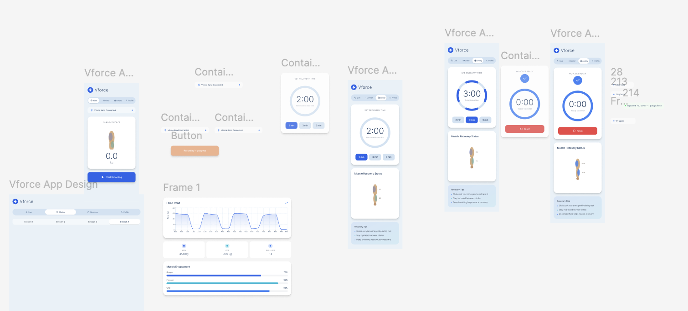
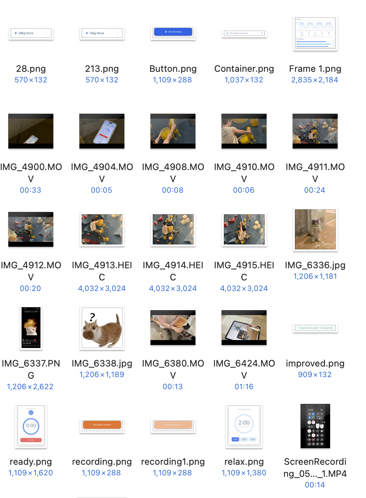
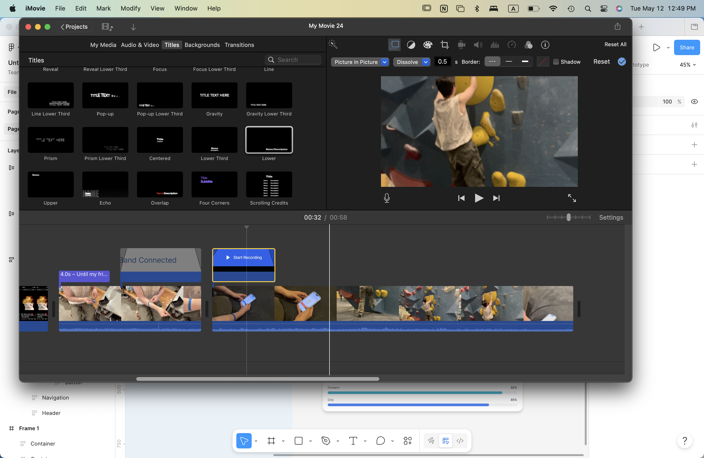

Assignment 5
Video Prototyping
Prompt
Design a novel interaction for a wellness product and communicate it through a scenario-based video prototype.
For this assignment, the video prototype needed to focus on a new service, feature, or interaction that does not currently exist. The purpose was not to make an advertisement or documentation video, but to use video as a design research tool that communicates the concept clearly enough for people to respond to it meaningfully.
Functions & Scenarios
Real-Time Force Tracking
The bracelet records force in real time from the arm wearing the device while climbing.
Session Summary Metrics
The system reports total force, average force, and maximum force across a climbing session.
Smart Recovery Timing
The product recommends relax time and can automatically start a timer to support recovery between attempts.
Practice And Posture Improvement
Climbers can repeat the same route multiple times and use the feedback to improve posture and body positioning.
Recovery And Performance
Climbers can use smart recovery timing and mental alerts to maintain stronger muscle performance across a session.
Feature Review / Design
Starting from the sport I like, bouldering, I had two main observations. First, many new climbers seem to assume that only people who can already do pull-ups can climb well. Second, I noticed in my own climbing that after I finish a route, I rarely go back and deliberately improve my posture, even though practice and body positioning make a major difference.
That led me to design a force-tracking bracelet for climbers that could measure force in real time and make improvement more visible. In climbing, people often say that using your feet wisely is what differentiates skill levels, so I wanted a concept that could help climbers notice how different body positions create completely different pressure on the upper body.
From a usability and feasibility perspective, the product needed to feel firm on the wrist and not distract climbing. I used to wear an Apple Watch while climbing, but it scratched easily and did not feel ideal for this context. Because the bracelet also needs to record data efficiently, it should sit close to the skin. I imagined it as an elastic, durable band, and later received the idea that it could be incorporated into a wrist protection band for added safety.
Storyboards
Storyboard brainstorming and revision for clearer filming and stronger storytelling.
I created two storyboard images. The first (left) focused on scenario brainstorming and an early draft of the storyboard. That version received feedback that it felt too much like an advertisement and that some camera angles were confusing. I then created a second version (right) as the final storyboard for filming.


Video
Embedded prototype video.
Embedded video prototype hosted on Google Drive.
Full video link: Open full video prototype on Google Drive
Critique & Feedback
Viewers understood the concept clearly and responded well to the realism of the video prototype.
In feedback, n = 4. People said the video made the product feel as if it actually existed and that incorporating screenshots to show the functions helped communicate the interaction clearly. They also thought the camera angles were interesting and did a good job drawing attention.
The main strength was that the story was clear and viewers understood the functions. One participant who boulders said they would like to try the product, which was useful evidence for desirability. The main suggestion for improvement was to make the plot even clearer and strengthen the storytelling around how the functions unfold across the scenario.
Analysis
The video prototype worked well for demonstrating usability and desirability, especially through believable interaction.
During testing, I was very happy to hear that even for people who do not boulder, I explained the functions very well. People responded strongly to the way I edited the video so it felt like there was actually a working device and app. That effect came from combining my app prototype recordings with editing and sound effects matched to the interactions.
This especially supported usability, because every tested user understood how the device worked. For desirability, I specifically tested the concept with a classmate who boulders. She said she would like to try it, but also felt the video could become stronger with more narrative beyond the function introduction.
Overall, the prototype was effective in showing feasibility at the level of concept communication, usability through the clarity of interactions, desirability through interest from climbers, and some degree of impact by framing the bracelet as a tool for measurable skill improvement. What still needed improvement was the storytelling arc, not the core product explanation itself.
Reflection
Video prototyping made the concept feel vivid, but editing limitations shaped the final result.



I chose this concept partly because I had an elastic band at home that felt useful for prototyping on camera, and also because AI tools can generate interactive prototype visuals quickly. That made the project feel achievable within the time I had.
One frustration was editing in iMovie. It cannot layer more than one overlapping clip the way more flexible editing tools can, so whenever I needed overlapping function screens I had to export and add them again, which was time-consuming. Still, I had a clear idea in mind and was able to achieve each effect with the tool I chose.
I also wish I had known more at the outset about how to use AI for video making, because I follow many creators who make strong AI-assisted videos. At the same time, I enjoyed being an actor and director for the scenario and telling my friend how to act. I especially liked building a continuous-shot feeling by holding the camera myself.
Compared with other editing software, iMovie feels traditional and limited in transitions, effects, templates, sound effects, and overlay flexibility. But I still appreciated editing on my computer, because the larger screen and operating area made the workflow much clearer than editing on my phone.
AI use
This website was built mostly through vibe coding, although I designed the overall visual style myself. I wrote the content for each section on a single page first and also wrote instructions for each section as a starting point for implementation.
As I pasted content into the site, AI improved some of my writing while formatting it for the webpage and occasionally generated section titles. I can confirm that more than 95% of the content is still my original work.
One special case is the process section: I wrote most of that content in Chinese first so I could describe the build steps accurately, since I did not know the English phrasing for some of them.